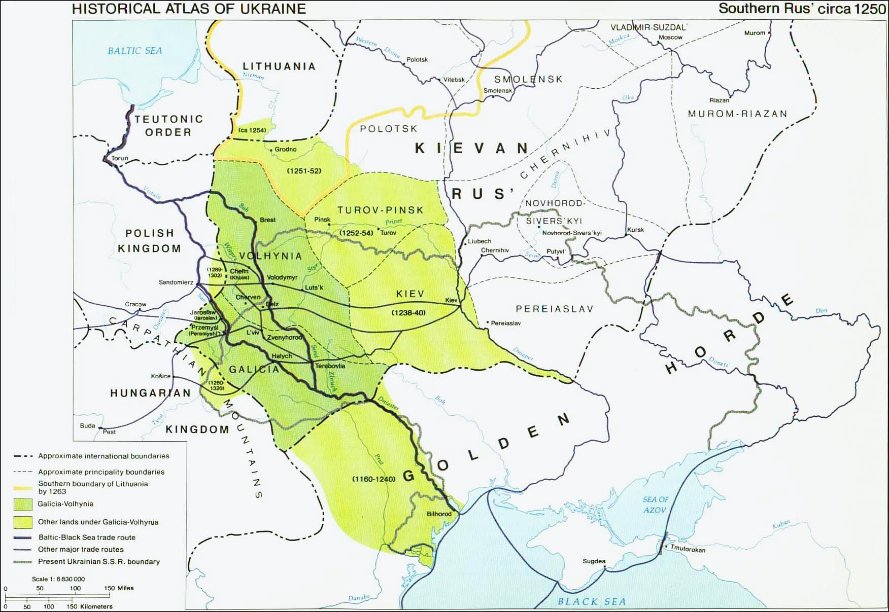

The Kingdom of Rus'(known as Principality of Galicia–Volhynia in 1199 - 1253 BC) was a state in the regions of Galicia and Volhynia, of present-day western Ukraine, which was formed after the conquest of Galicia by the Prince of Volhynia Roman the Great, with the help of Leszek the White of Poland. Roman the Great united the principalities of Halych (Galicia) and Volhynia into a state that existed from 1199 to 1349. Along with Novgorod and Vladimir-Suzdal, it was one of the three most important powers to emerge from the collapse of Kievan Rus'.
